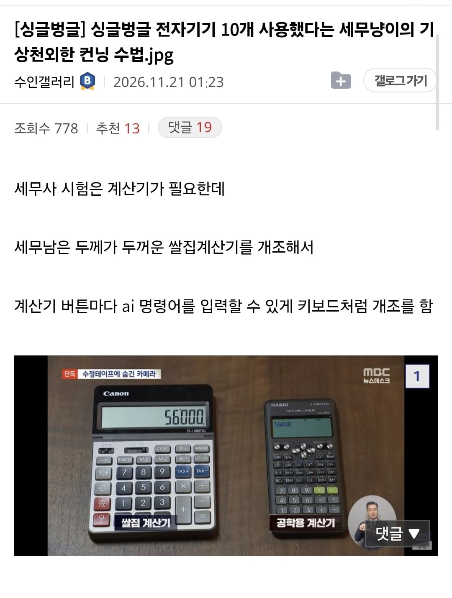
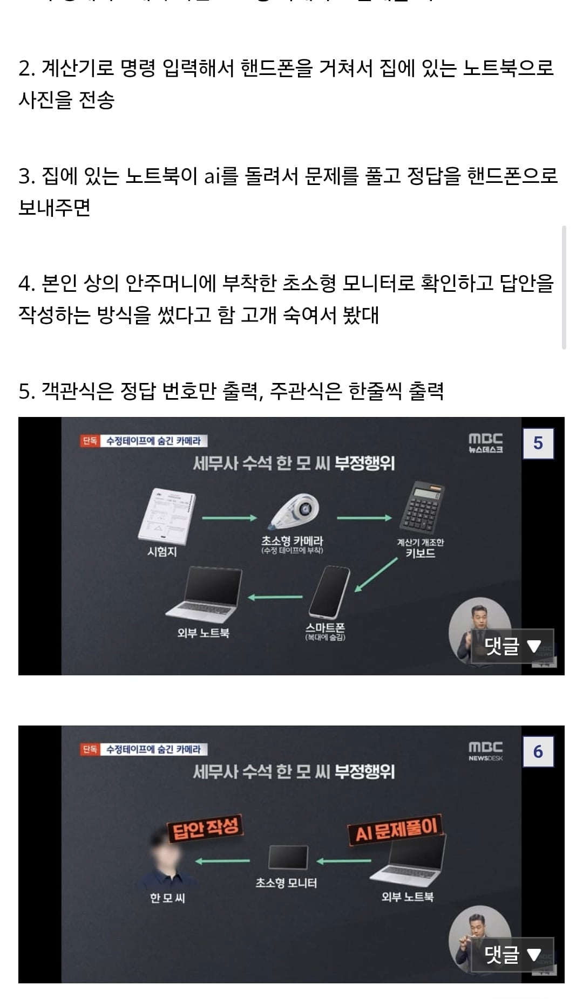

나랏돈으로 중고살려면 개빡셀걸? 난 안된다고 본다
담당자 : 내 돈 아끼는 것도 아닌데 무슨 기준 마련하고 상태 검수하느라 인력 쏟아붓느니 걍 새거 n만개 견적서 받아서 발주하는걸로 계획서 올릴래
+ 잘못되면 책임도 져야되고, 어디에 따질 수도 없음.
그거 제대로 작동하는지 검수하는 인건비가 더 들거같다
누가 과거 구매영수증을 보관하고 있음.
내 생각이 짧은거인지 모르지만
보통은 인터넷에서 구매하지?
공학용 세무용 쌀집 계산기 종류가 한두가지도 아니고, 제일 많이 쓴다는 카시오, 샤프 계산기 몇종류만 매입할거임?
• 카시오: FX-80~120, FX-301~399, FX-501~599, FX-901~999
• 샤프: EL-501~599, EL-5100, EL-5230, EL-5250, EL-5500
• 캐논: F-715SG, F-788SG, F-792SGA
여디다가 좀 투자한 사람들은 ti 쓰는 사람도 있을거고.
어치피 일괄구매 해서 나눠줄거면 모델 통일 해야하는데, 그냥 사는게 맞음.
쟤는 어디선가 스카웃을 하겠네
??? :너 우리랑 일 하나 같이 하자
아니지
저런 식으로 슬쩍 합격해야 하는 걸 갖다가 눈치도 없이 초고득점 수석을 해서 걸려버렸으니 폐급이지
그래도 솔루션 어디서 불법으로 산게 아니라 diy였나보네 ㅋㅋ
저 노력으로 중급닌자했었어야지
찐 중급닌자 필기시험이네
리트냥이가 서울대 치대 간 방법이 궁금하다고 ㅠㅠ
지린다진짜
ㅋㅋ
상급닌자... 아니 호카게급인데?
리트냥이도 수정테이프나 지우개 썼을 확률이 높겠네
재능충이네
ㅋㅋ 저럴 노력으로 공부나 하지
전자닌자네
쟤가 리트냥이한테 팔아서 리트냥이도 대중없이 백접박아버린 스토리로 재밋게 짜줘!
산업입력공단도 괜히
공학용 계산기 구비해둔다고
몇만대씩 세금들여 신품으로 사지말고
일반인들한테 중고로 구입했으면 좋겠음
어짜피 일반인들은 공학용 계산기를
20-30대 자격증 수험용으로
샀을 경우가 아주 많은데
전국 시도마다 산업인력공단 지부 있으니까
거기서 과거 구매영수증 + 계산기본체 가져오면
상태 확인 후 중고로 매입해주는 식으로